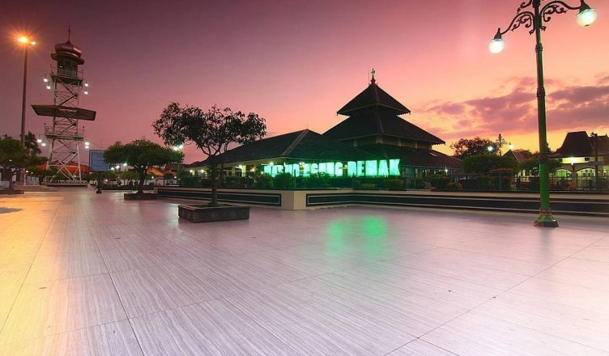
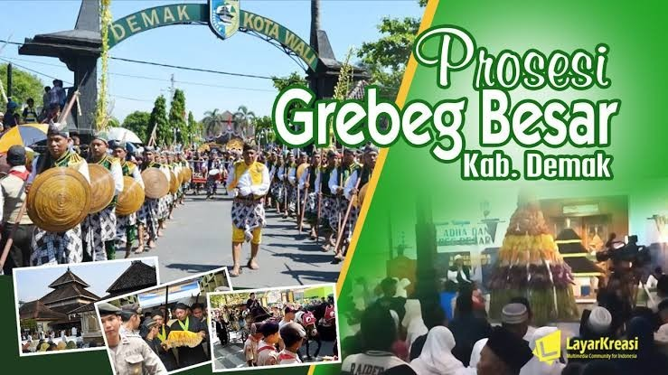

Kabupaten Demak
Kabupaten Demak, adalah salah satu kabupaten di provinsi Jawa Tengah. Ibukotanya adalah Demak. Kabupaten ini berbatasan dengan Laut Jawa di barat, Kabupaten Jepara di utara, Kabupaten Kudus di timur, Kabupaten Grobogan di tenggara, serta Kota Semarang dan Kabupaten Semarang di sebelah barat.
"Wikipedia"Masjid Agung Dan Grebeg Besar Demak
Wisata Religi Masjid Agung Kota Demak – Masjid Agung Demak adalah salah satu masjid tertua yang ada di Indonesia. Masjid ini terletak di Kampung Kauman, Kelurahan Bintoro, Kecamatan Demak, Kabupaten Demak, Jawa Tengah.

Grebek Besar Demak - Grebeg Besar Demak merupakan sebuah acara budaya tradisional besar yang menjadi salah satu ciri khas Demak. Tradisi Grebeg Besar Demak ini berlangsung setiap tahun pada tanggal 10 Dzulhijah saat Idul Adha. Dimeriahkan dengan karnaval kirap budaya yang dimulai dari Pendopo Kabupaten Demak hingga ke Makam Sunan Kalijaga yang terletak di Desa Kadilangu, jaraknya sekitar 2 kilometer dari tempat mulai acara.

Semboyan
Artikel Kabupaten Demak Lain